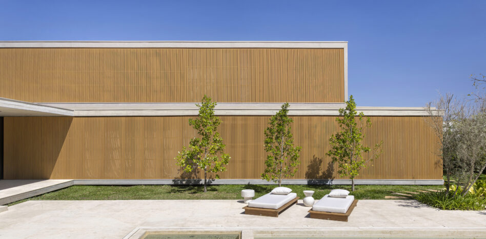
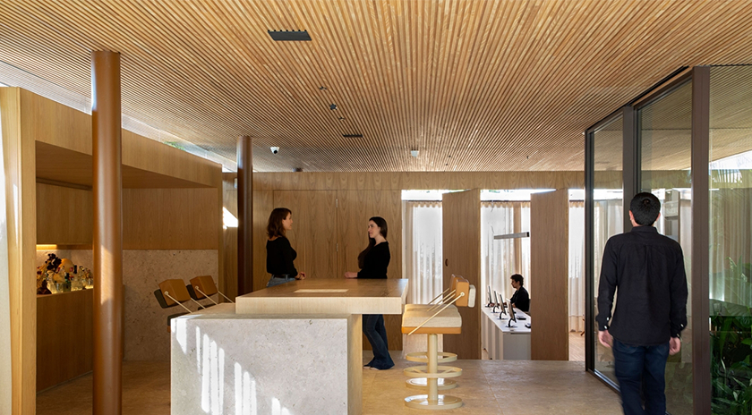
Studio Otto Felix
Entendemos a arquitetura como forma de expressão. Nossos projetos nascem do encontro entre um olhar autoral, as pessoas e o lugar. Da escala do objeto à cidade, articulamos matéria, luz e proporção para criar espaços com identidade, unindo sensibilidade artística e rigor técnico.
Projetos
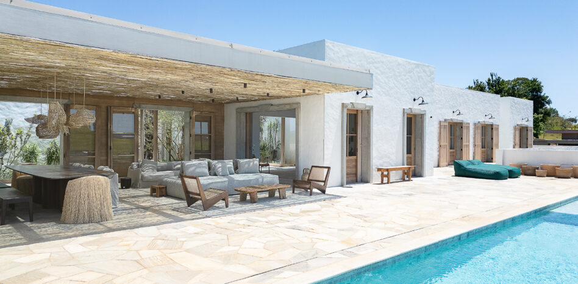
CASA DAMATA
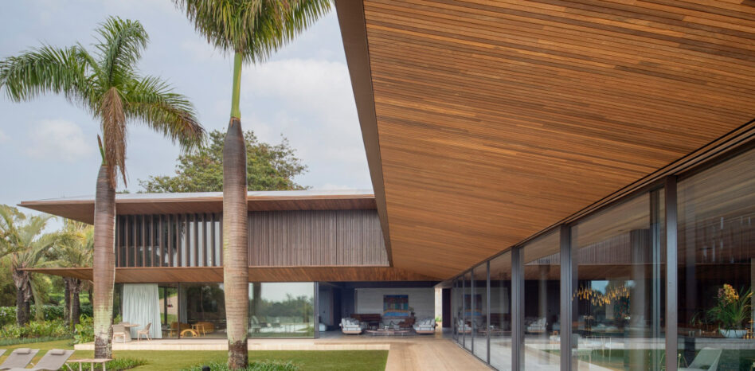
CASA PAU FERRO
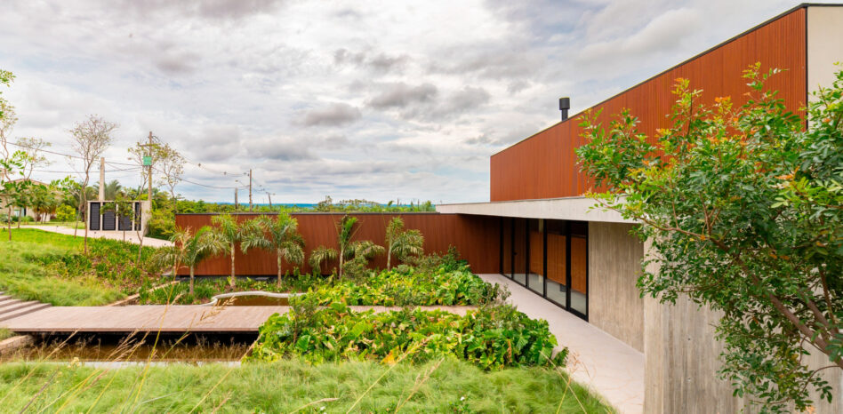
CASA MB
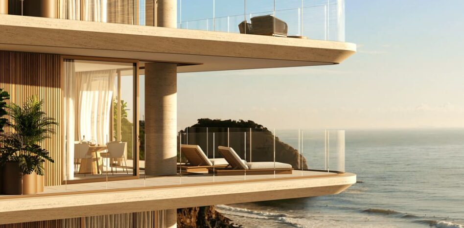
SCENARIO BUILDING
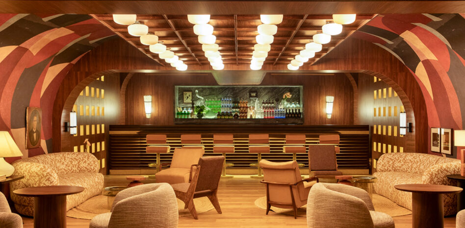
LE TT SPEAKEASY
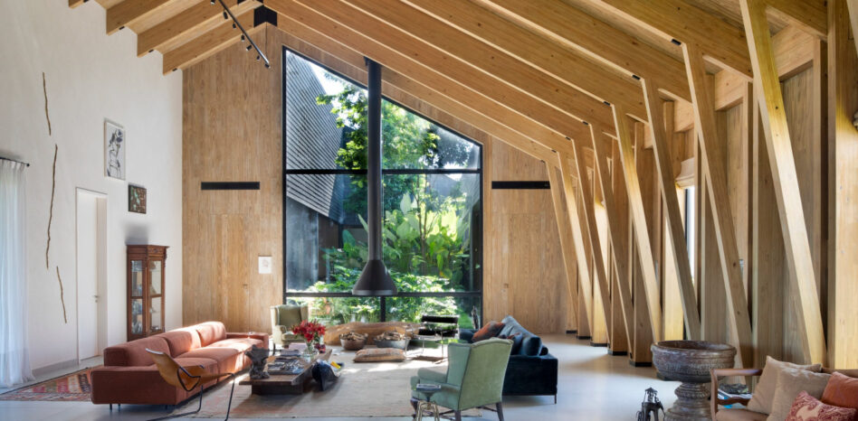
CASA CELEIRO
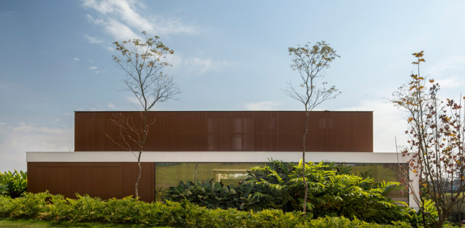
CASA PORTO FELIZ
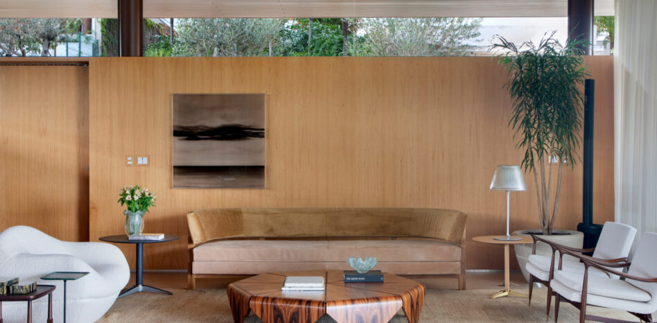
CASA SWISS
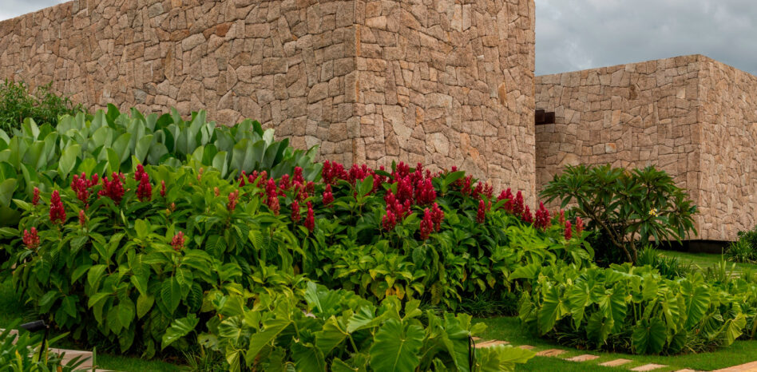
CASA AU
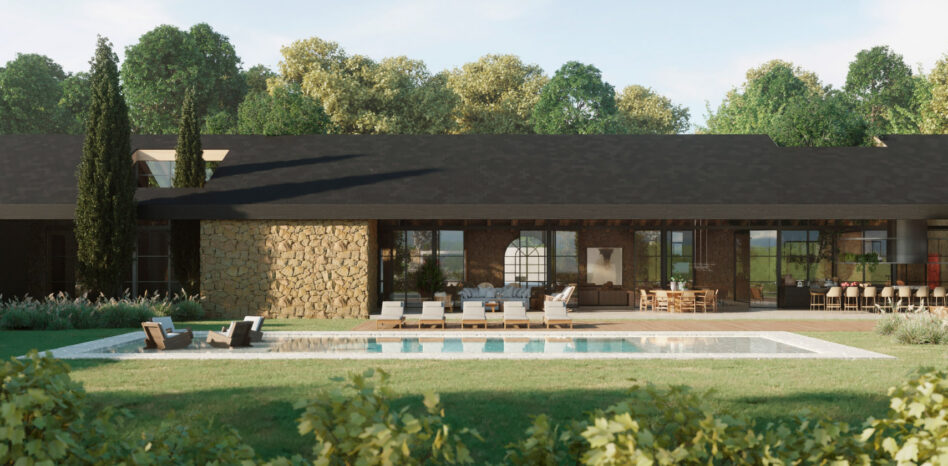
AG-ALE HOUSE
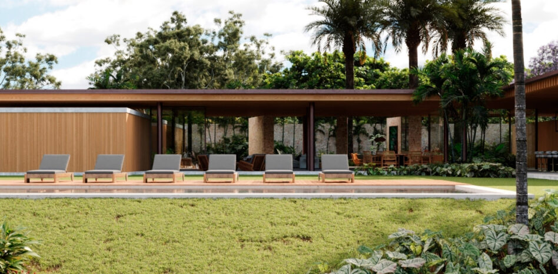
IÓ HOUSE
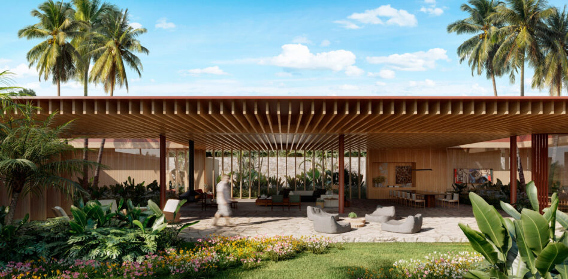
CASA A
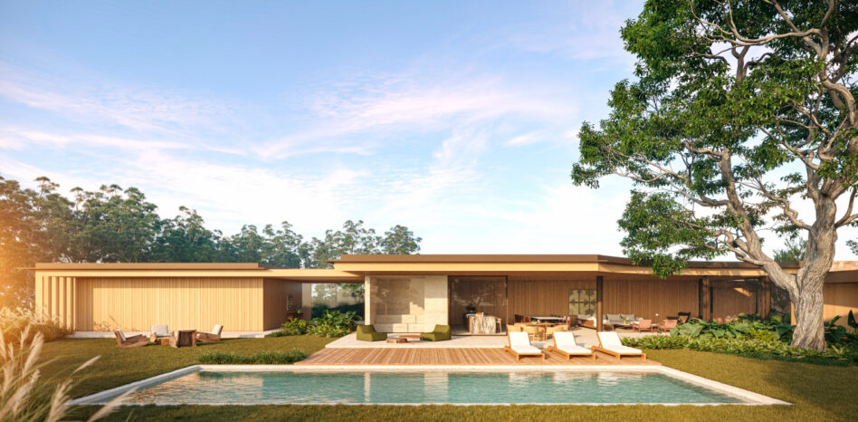
CASA VERO
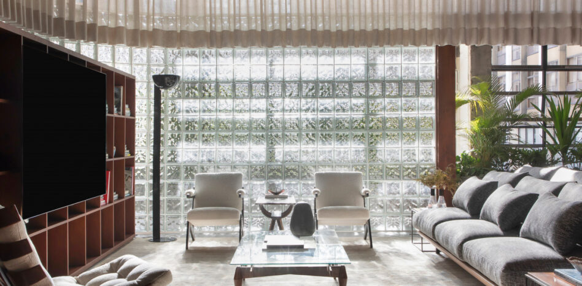
CASACOR 2022
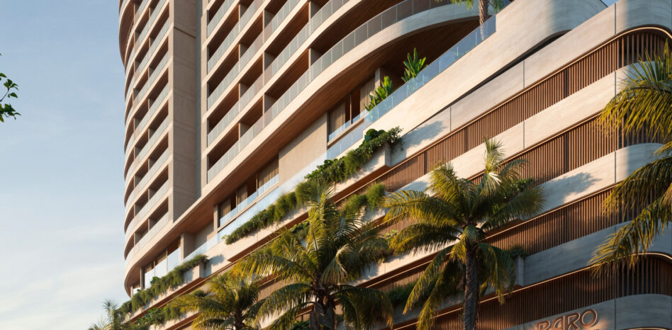
RARO BUILDING
Cada obra ou peça
deve propor uma solução
e deve também
contar uma historia, emocionar.